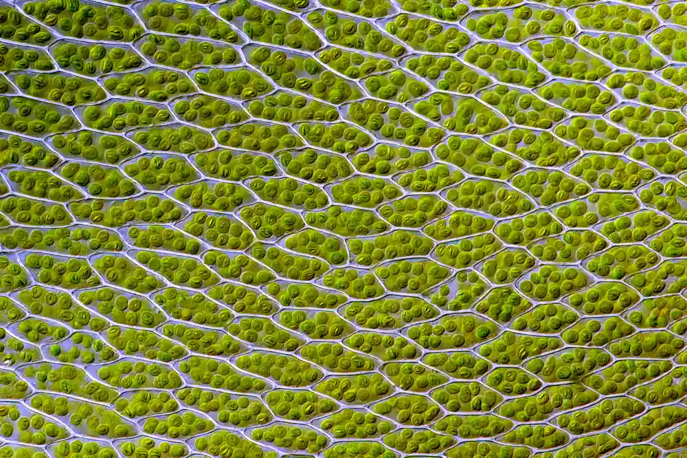
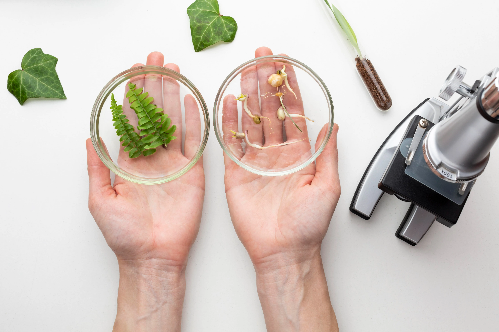
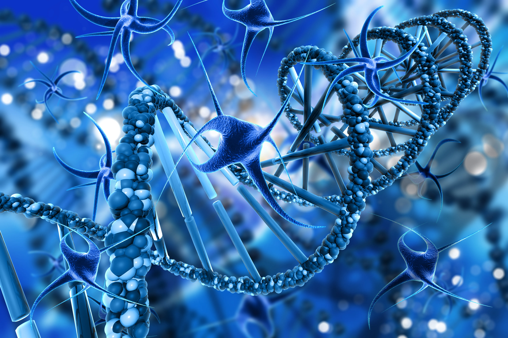
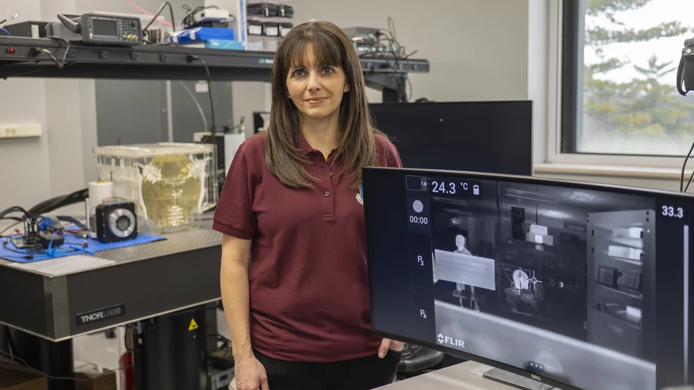

NeoGenix goes beyond natural limits, employing artificial intelligence to rapidly prototype life-saving cellular structures and clean technologies.




To fundamentally upgrade the biological foundation of the modern world by replacing inefficient processes with programmable, ethical, and highly optimized organic solutions.

NeoGenix was established directly out of a theoretical physics laboratory aiming to code DNA like software.
Successfully printed and activated the world's first fully synthetic, programmable eukaryotic cell.
Deployed localized micro-ecological restoration swarms to neutralize deep ocean oil spills.
Now operating massive bio-compute farms that handle predictive medical analysis for over 4 billion individuals.
Core Patents
Global Datacenters
Years Refining
Syn-Cells Deployed
Director of Syn-Biology
CRISPR CoreHead of Bio-Computation
Neural SystemsLead Eco-Deployments
Planetary Restoration